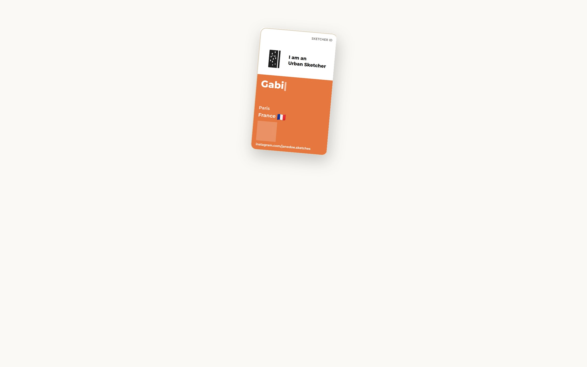
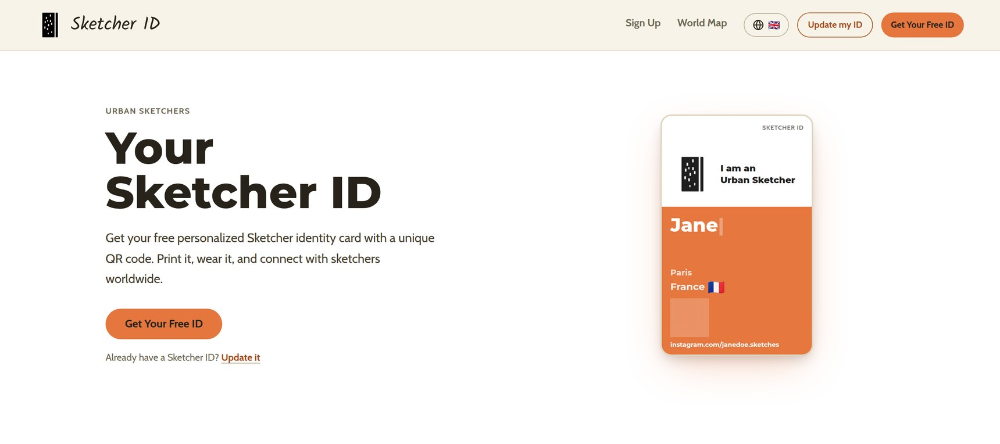
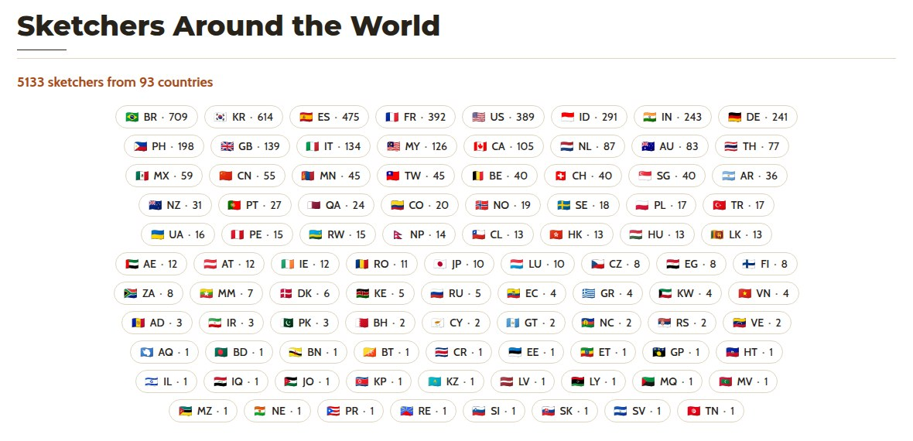

Ce projet de création d'un badge d'identification ouvert à chaque urban sketcher fait suite à la volonté de régler une frustration terrain remontée durant le symposium annuel Urban Sketchers de 2025. Neuf mois plus tard, plus de 5 000 personnes l'ont adopté.
Par Alexis Blandin · 3 min de lecture · id.urbansketchers.org
Comme chaque année, en 2025, Urban Sketchers organisait son symposium annuel à Poznań, en Pologne. Cet événement est un moment important de la vie de l'association, où l'on se regroupe, avec des participants et instructeurs venant des quatre continents, en un endroit précis du monde, pour faire vivre notre passion commune pour le dessin sur le vif.
Néanmoins, un tel événement nécessite une logistique coûteuse et donc l'ouverture d'une billetterie limitée. Il n'est pas donné à toute une partie des participants de pouvoir avoir une place : soit parce que les billets étaient tous vendus, soit parce qu'ils ne pouvaient tout simplement pas se le permettre.
D'autres voulaient simplement dessiner avec les autres, sans suivre de cours. Eh bien, jamais à court de ressources, une communauté Facebook de sketchers aura eu l'idée de se créer un badge à eux, pour pouvoir se reconnaître. Un badge orange bricolé « Independent Sketchers », faisant écho aux badges officiels des quelques privilégiés faisant partie de l'événement officiel.
Pourtant, la pratique du dessin sur le vif est quelque chose de simple et d'universel, devant être à la portée de tous.
De là a germé l'idée d'adapter cette idée pour le prochain symposium 2026, se tenant à Toulouse. Une application simple est née de cette ambition : un formulaire d'enregistrement, un badge unique et téléchargeable affichant un QR code vers les informations de l'événement.
Le premier prototype aura été rapidement mis en ligne. L'ensemble aura été designé via Lovable, puis la version de production, deux semaines plus tard, déployée sur le domaine id.urbansketchers.org hébergé sous Cloudflare Pages.

En juin, le badge du symposium est devenu Sketcher ID, une carte ouverte à tous les urban sketchers, qu'ils aillent ou non à un symposium.
L'application a évolué et désormais chacun peut y ajouter un lien vers son réseau social, que le QR code ouvre, et la modifier quand il le souhaite. Le design a changé et de nouveaux templates sont en préparation.
Au 24 novembre 2026, le Brésil compte 709 inscrits, la Corée 614, l'Espagne 475 et la France 392.

Neuf mois après ce message d'un dimanche de février, ce ne sont pas moins de 5 133 sketchers dans 93 pays qui auront créé leur carte.